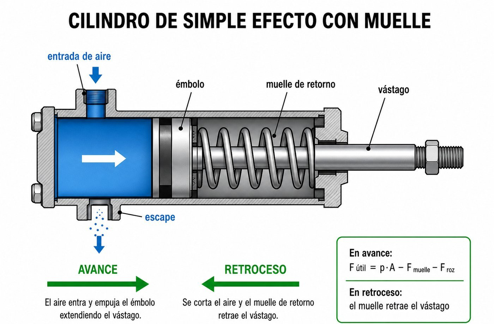
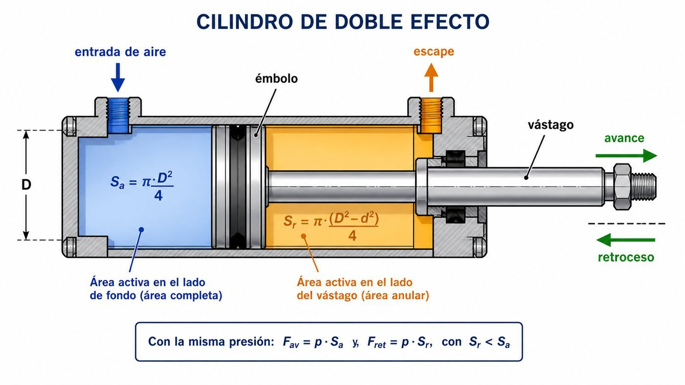
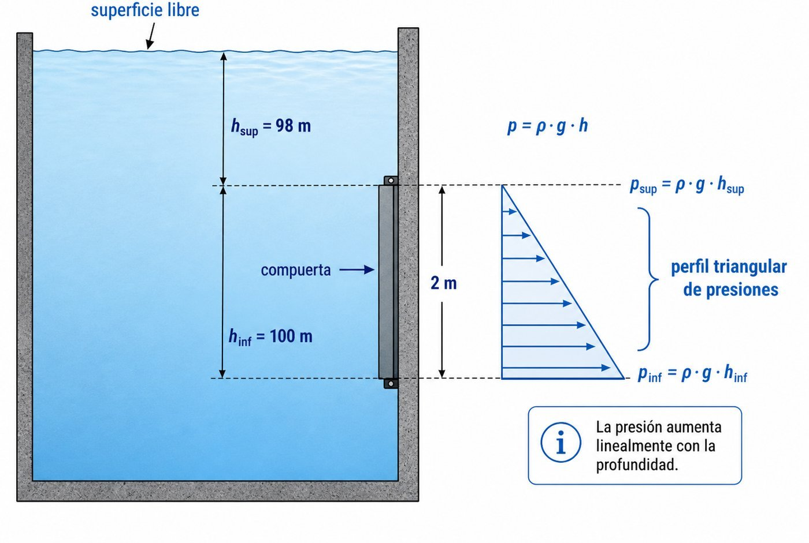
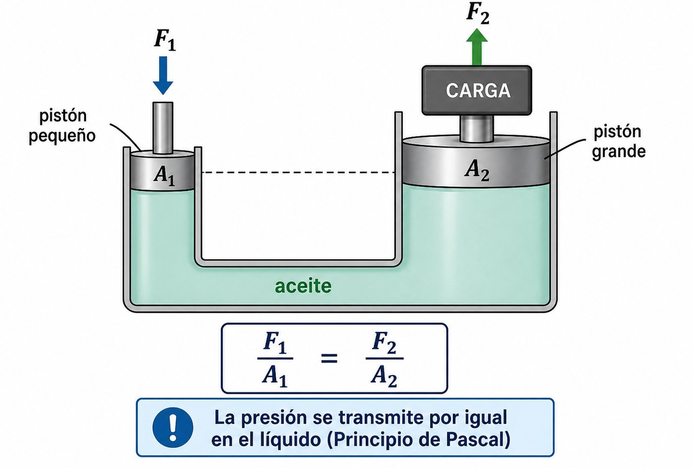
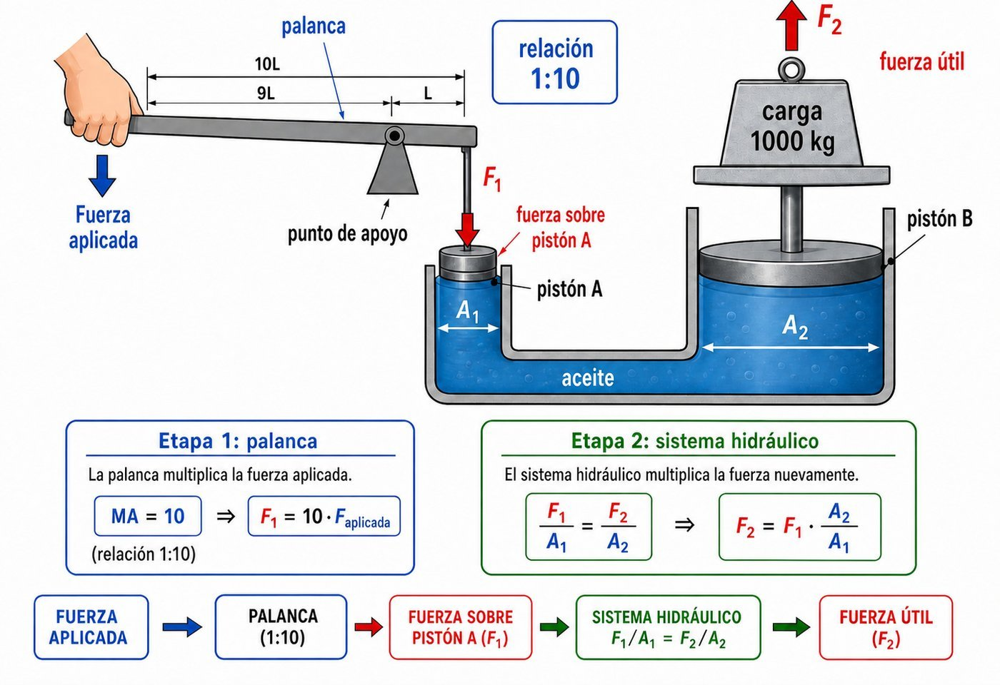
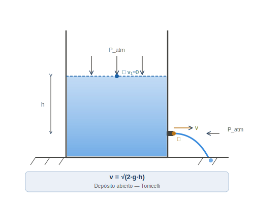
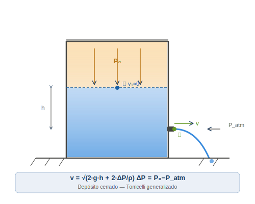
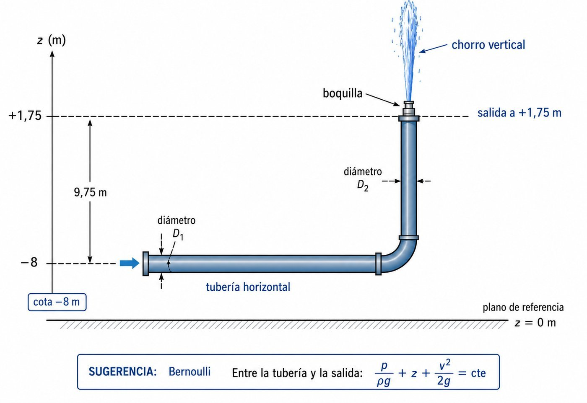
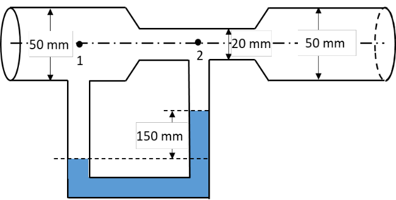
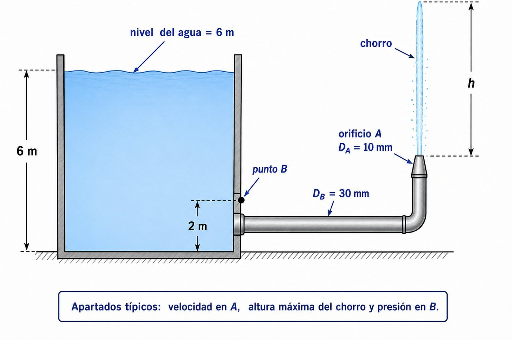

| Caso | Fórmula clave | Error típico a evitar |
|---|---|---|
| Cilindro SE — avance | \(F_{av} = p\cdot A - F_{roz} - F_{muelle}\) | Olvidar restar muelle y rozamiento |
| Cilindro DE — avance | \(F_{av} = p\cdot S_a\cdot\eta\) | Usar área anular en avance |
| Cilindro DE — retroceso | \(F_{ret} = p\cdot S_r\cdot\eta\), con \(S_r = S_a - S_v\) | No descontar la sección del vástago |
| Volumen aire en CN (Boyle) | \(V_{CN} = V_{trab}\cdot\dfrac{p_{man}+p_{atm}}{p_{atm}}\) | Usar sólo la presión manométrica |
| Potencia neumática | \(P_{neum} = p_{man}\cdot Q_{trab}\) | Usar \(Q_{CN}\) en vez de \(Q_{trab}\) |
| Hidráulica (incompresible) | \(V_{aceite} = A\cdot L\) | Aplicar Boyle como si fuese aire |
| Pascal — prensa | \(\dfrac{F_1}{A_1}=\dfrac{F_2}{A_2}\), \(A_1 d_1 = A_2 d_2\) | Confundir relación de fuerzas y desplazamientos |
| Hidrostática | \(p = \rho\,g\,h\) | Usar altura total en vez de columna sobre el punto |
| Bernoulli | \(p + \tfrac{1}{2}\rho v^2 + \rho g h = cte\) | Olvidar el término de altura o el cinético |
| Continuidad | \(A_1 v_1 = A_2 v_2 = Q\) | No relacionar \(v_1\) y \(v_2\) antes de Bernoulli |
| Torricelli (depósito grande, abierto) | \(v = \sqrt{2 g h}\) | Aplicar si depósito está cerrado o presurizado |
| Reynolds | \(Re = \dfrac{\rho\,v\,D}{\mu}\) | Confundir \(\mu\) (Pa·s) con \(\nu\) (m²/s) |
| Régimen de flujo | Laminar: \(Re<2000\) · Turbulento: \(Re>4000\) | No fijar bien las fronteras |
| Potencia bomba | \(P_{bomba} = \dfrac{p\cdot Q}{\eta}\) | Confundir con turbina (\(P_t = p\,Q\,\eta\)) |
En una bodega de Montilla (Córdoba) se utiliza un cilindro neumático de simple efecto con retorno por muelle para sellar las botellas en la línea de embotellado. El cilindro tiene un émbolo de 40 mm de diámetro y una carrera de 60 mm, y trabaja con aire comprimido a una presión de 0,6 MPa. Las pérdidas por rozamiento representan el 10 % de la fuerza teórica. El muelle de retorno tiene una constante elástica k = 300 N/m y, en la posición inicial (vástago retraído), parte de su longitud natural. Se considera una presión atmosférica de 10⁵ Pa.
a) Calcule la fuerza teórica de avance del émbolo.
b) Calcule la fuerza efectiva al final de la carrera de avance (situación más desfavorable, con el muelle máximamente comprimido).
c) Estudie si el muelle puede retraer el émbolo cuando éste se halla a mitad de carrera (compresión x = 30 mm), oponiéndose el rozamiento.
d) Durante la temporada de embotellado la bodega funciona a un ritmo de 25 ciclos por minuto a lo largo de una jornada diaria de 8 horas. Calcule el volumen total de aire consumido expresado en condiciones normales (patm = 10⁵ Pa).

\[A\ = \ \frac{\pi \cdot D^2}{4} = \ \frac{\pi \times (0,040)^2}{4} = \ 1,257 \times 10^{-3}\ m^2\]
\[Ft\ = \ p \cdot A\ = \ 0,6 \times 10^6\ \times \ 1,257 \times 10^{-3}\ \approx \ 754\ N\]
En el avance se oponen al empuje del aire dos fuerzas: el rozamiento (10 % de Ft) y el muelle, cuya fuerza crece linealmente con la compresión: \(F_{muelle} = k\cdot x\). En la situación más desfavorable, el muelle está totalmente comprimido (\(x = \) carrera \(= 60\) mm):
\[F_{muelle,\,máx}\ =\ k\cdot x\ =\ 300\,\text{N/m}\times 0{,}060\,\text{m}\ =\ 18\,\text{N}\]
\[F_{roz}\ =\ 0{,}10\cdot F_t\ =\ 0{,}10\times 754\ =\ 75{,}4\,\text{N}\]
\[F_{e,av}\ =\ F_t\ -\ F_{roz}\ -\ F_{muelle,\,máx}\ =\ 754\ -\ 75{,}4\ -\ 18\ \approx\ 661\,\text{N}\]
En el retroceso, el muelle empuja al émbolo y el rozamiento se opone al movimiento. Aplicamos el modelo \(F_{muelle} = k\cdot x\):
\[F_{muelle}\ =\ k\cdot x\ =\ 300\times 0{,}030\ =\ 9\,\text{N}\]
Estimamos la fuerza de rozamiento en valor absoluto similar al del avance (es una simplificación habitual: el rozamiento depende del estado superficial, no del sentido del movimiento):
\[F_{roz}\ \approx\ 75{,}4\,\text{N}\]
Fuerza neta de retroceso:
\[F_{ret}\ =\ F_{muelle}\ -\ F_{roz}\ =\ 9\ -\ 75{,}4\ =\ -66{,}4\,\text{N}\ <\ 0\]
Volumen por ciclo en condiciones de trabajo:
\[V_{trab}\ = \ A \times carrera\ = \ 1,257 \times 10^{-3}\ \times \ 0,060\ = \ 7,54 \times 10^{-5}\ m^3\]
Expandir a condiciones normales (Ley de Boyle):
\[V_{norm}\ = \ V_{trab} \times \frac{pt + patm}{patm} = \ 7,54 \times 10^{-5} \times \frac{6 \times 10^5 + 10^5}{10^5} = \ 7,54 \times 10^{-5} \times 7\ = \ 5,28 \times 10^{-4}\ m^3\]
Ciclos totales y volumen total:
\[N\ = \ 25\ ciclos/min\ \times \ 60\ min/h\ \times \ 8\ h\ = \ 12\ 000\ ciclos\]
\[V_{total}\ = \ 5,28 \times 10^{-4}\ \times \ 12\ 000\ = \ 6,33\ m^3\ = \ 6\ 336\ L\]
⚠ En cilindro SE: en el avance hay que descontar SIEMPRE rozamiento y muelle (ambos se oponen al aire).
⚠ El muelle se modela con \(F = k\cdot x\); su fuerza varía linealmente con la posición. La situación más exigente del avance es al final de la carrera; la más exigente del retroceso es al final del retroceso (cuando \(x \to 0\)).
⚠ Conversión a condiciones normales: \(V_{CN} = V_{trab}\cdot(p_{man}+p_{atm})/p_{atm}\). Usar siempre presión absoluta para Boyle.
⚠ Tipo frecuente en PEvAU: cilindro SE con muelle. Aparece en ~6 exámenes 2018-2024.
Un cilindro neumático de simple efecto con retorno por muelle está conectado a una red de aire a 1 MPa. El diámetro del émbolo es 10 cm, la carrera 3 cm y la constante del muelle k = 100 N/cm. El muelle se encuentra en su longitud natural al inicio del ciclo.
a) Calcular la fuerza ejercida por el vástago al inicio de la carrera (muelle en longitud natural).
b) Calcular la fuerza al final de la carrera (muelle comprimido 3 cm).
c) Calcular el consumo de aire en condiciones normales tras 20 ciclos de trabajo.
\[A\ = \ \pi D^2/4\ = \ \pi \times (0,10)^2/4\ = \ 7,854 \times 10^{-3}\ m^2\]
\[F_{teo}\ = \ p \cdot A\ = \ 1 \times 10^6 \times 7,854 \times 10^{-3}\ = \ 7854\ N\]
\[F_{muelle}(x = 0)\ = \ k \cdot x\ = \ 100 \times 0\ = \ 0\ N\ \ \Rightarrow \ \ F_{inicio}\ = \ 7854\ - \ 0\ = \ 7854\ N\]
\[F_{muelle}(x = 3)\ = \ k \cdot x\ = \ 100\ N/cm\ \times \ 3\ cm\ = \ 300\ N\]
\[F_{final}\ = \ F_{teo}\ - \ F_{muelle}\ = \ 7854\ - \ 300\ = \ 7554\ N\]
\[V_{ciclo}\ = \ A \cdot L\ = \ 7,854 \times 10^{-3}\ m^2\ \times \ 0,03\ m\ = \ 2,356 \times 10^{-4}\ m^3\]
\[V_{CN}\ = \ V_{ciclo}\ \times \ (p/p_{0})\ \times \ 20\ = \ 2,356 \times 10^{-4}\ \times \ (11/1)\ \times \ 20\ = \ 5,184 \times 10^{-2}\ m^3\ = \ 51,8\ L\]
⚠ Diferencia clave con el SE clásico: la fuerza del muelle no es un % fijo sino Fmuelle = k·x, que crece con la carrera. La fuerza útil disminuye al avanzar el émbolo. Para el consumo en CN: VCN = Vtrabajo × (pt+patm)/patm. Usar siempre presión absoluta..
En una cooperativa olivarera de Martos se emplea un cilindro de doble efecto para el llenado de envases de aceite. El cilindro tiene un diámetro de émbolo D = 80 mm, diámetro de vástago d = 20 mm y carrera L = 250 mm. La presión de trabajo es p = 6 bar y el rendimiento mecánico de la instalación es η = 0,90.
a) Calcula la fuerza efectiva de empuje en avance (lado émbolo).
b) Calcula la fuerza efectiva de retroceso (lado vástago).
c) Calcula el caudal de aire (a presión de trabajo) necesario para completar la carrera de avance en t = 2 s.

\[S_a\ =\ \frac{\pi\cdot D^2}{4}\ =\ \frac{\pi\times (0{,}080)^2}{4}\ =\ 5{,}027\times 10^{-3}\,\text{m}^2\]
\[S_r\ =\ \frac{\pi\cdot (D^2-d^2)}{4}\ =\ \frac{\pi\times (0{,}080^2-0{,}020^2)}{4}\ =\ 4{,}712\times 10^{-3}\,\text{m}^2\]
\[F_{e,av}\ =\ p\cdot S_a\cdot\eta\ =\ 6\times 10^5\times 5{,}027\times 10^{-3}\times 0{,}90\ \approx\ 2\,714\,\text{N}\]
\[F_{e,ret}\ =\ p\cdot S_r\cdot\eta\ =\ 6\times 10^5\times 4{,}712\times 10^{-3}\times 0{,}90\ \approx\ 2\,545\,\text{N}\]
Fe,av > Fe,ret porque Sa > Sr (el vástago ocupa parte de la cámara delantera).
Volumen barrido en el avance:
\[V_{av}\ =\ S_a\cdot L\ =\ 5{,}027\times 10^{-3}\times 0{,}250\ =\ 1{,}257\times 10^{-3}\,\text{m}^3\]
Caudal medio (a presión de trabajo, sin convertir a CN porque el enunciado no lo pide):
\[Q_{trab}\ =\ \frac{V_{av}}{t}\ =\ \frac{1{,}257\times 10^{-3}}{2}\ =\ 6{,}28\times 10^{-4}\,\text{m}^3/\text{s}\ \approx\ 0{,}628\,\text{L/s}\]
⚠ Sr < Sa siempre: el vástago ocupa parte de la cámara delantera.
⚠ El caudal pedido es a presión de trabajo. Si se pidiera en condiciones normales habría que multiplicar por (pman+patm)/patm = 7.
Un grupo de ingenieros están decidiendo qué tipo de cilindro neumático elegir para la cadena de montaje de una fábrica de ensamblaje del fuselaje de aviones. Necesitan un circuito neumático con un cilindro de doble efecto para ejercer una fuerza de 8 500 N en su carrera de avance para elevar verticalmente determinadas piezas. El fabricante de cilindros les ofrece dos modelos de cilindro distintos, aunque ambos tienen diámetro de émbolo 8 cm, carrera 10 cm y diámetro de vástago 5 cm. En uno de ellos, la tensión máxima admisible del material del vástago es de 10 MPa y en el otro, 1 MPa.
a) ¿Qué tipo de cilindro utilizaría? Justificar la respuesta.
b) Calcule el consumo de aire medido a la presión de trabajo, si efectúa 10 ciclos por minuto y la presión de la red de aire comprimido es de 3 MPa.
Datos comunes: De = 8 cm = 0,08 m; dv = 5 cm = 0,05 m; L = 10 cm; Favance = 8 500 N.
La tensión a la que se somete el vástago durante el avance (compresión):
\[S_v = \frac{\pi \cdot d_v^2}{4} = \frac{\pi \times 0{,}05^2}{4} = 1{,}963 \times 10^{-3} \text{ m}^2\]
\[\sigma_v = \frac{F}{S_v} = \frac{8\,500}{1{,}963 \times 10^{-3}} = 4{,}33 \text{ MPa}\]
Comparación con los dos modelos:
\[\boxed{\text{Se elige el modelo A } (\sigma_{máx} = 10\text{ MPa})}\]
Verificación adicional: la presión necesaria en el émbolo es \(P = F/S_a = 8\,500/(\pi \times 0{,}08^2/4) = 1{,}69\) MPa \(< 3\) MPa (presión de red) → el cilindro puede generar la fuerza requerida.
Datos: 10 ciclos/min, Pred = 3 MPa.
Áreas:
\[S_a = \frac{\pi \times 0{,}08^2}{4} = 50{,}27 \text{ cm}^2 \qquad S_v = \frac{\pi \times 0{,}05^2}{4} = 19{,}63 \text{ cm}^2\]
\[S_r = S_a - S_v = 50{,}27 - 19{,}63 = 30{,}63 \text{ cm}^2\]
Volumen por ciclo completo (avance + retroceso):
\[V_{\text{ciclo}} = (S_a + S_r) \times L = (50{,}27 + 30{,}63) \times 10 = 809{,}0 \text{ cm}^3\]
Consumo a presión de trabajo:
\[\boxed{Q_{P_{trab}} = V_{\text{ciclo}} \times n = 809{,}0 \times 10 = 8\,090 \text{ cm}^3\text{/min} \approx 8{,}09 \text{ l/min}}\]
⚠ Tipo Ponencia P1-C3: ejercicio de elección entre dos cilindros por resistencia del vástago. La clave es calcular σ = F/Avástago y comparar con σmáx. En el apartado b), el enunciado pide consumo "a presión de trabajo" (NO en condiciones normales), así que no hay que convertir con Boyle-Mariotte.
Un cilindro neumático de simple efecto de 10 cm de diámetro y 15 cm de carrera realiza 48 ciclos por minuto a una presión de trabajo de 500 kPa. El rendimiento mecánico de la instalación es del 75 %.
a) Calcular el caudal de aire consumido en condiciones normales (L/min).
b) Calcular la potencia del motor de accionamiento del compresor.
\[A\ =\ \frac{\pi D^2}{4}\ =\ \frac{\pi\times (0{,}10)^2}{4}\ =\ 7{,}854\times 10^{-3}\,\text{m}^2\]
\[V_{ciclo}\ =\ A\cdot L\ =\ 7{,}854\times 10^{-3}\times 0{,}15\ =\ 1{,}178\times 10^{-3}\,\text{m}^3\]
Factor de expansión a condiciones normales (Boyle, presión absoluta): \((p_{man}+p_{atm})/p_{atm} = (5+1)/1 = 6\).
\[Q_{CN}\ =\ V_{ciclo}\cdot 6\cdot n\ =\ 1{,}178\times 10^{-3}\times 6\times 48\ =\ 0{,}3393\,\text{m}^3/\text{min}\ \approx\ 339{,}4\,\text{L/min}\]
Atención: para calcular la potencia neumática se utiliza el caudal a la presión de trabajo, NO el caudal expandido a CN. Calculamos primero \(Q_{trab}\):
\[Q_{trab}\ =\ V_{ciclo}\cdot n\ =\ 1{,}178\times 10^{-3}\times 48\ =\ 5{,}66\times 10^{-2}\,\text{m}^3/\text{min}\ \approx\ 56{,}5\,\text{L/min}\]
En unidades del SI:
\[Q_{trab}\ =\ \frac{5{,}66\times 10^{-2}}{60}\ =\ 9{,}43\times 10^{-4}\,\text{m}^3/\text{s}\]
Potencia neumática (energía hidráulica del aire a la presión manométrica):
\[P_{neum}\ =\ p_{man}\cdot Q_{trab}\ =\ 5\times 10^5\,\text{Pa}\times 9{,}43\times 10^{-4}\,\text{m}^3/\text{s}\ \approx\ 471\,\text{W}\]
Potencia del motor que acciona el compresor (corregida por el rendimiento):
\[P_{motor}\ =\ \frac{P_{neum}}{\eta}\ =\ \frac{471}{0{,}75}\ \approx\ 628\,\text{W}\]
⚠ Error didáctico habitual: usar \(Q_{CN}\) en \(P = p\cdot Q\) es incorrecto. El caudal en CN expresa cuánto aire habría a presión atmosférica, pero el aire en el cilindro está a \(p_{trab}\). La potencia mecánica que mueve el émbolo es \(P = p_{man}\cdot Q_{trab}\), no \(p_{man}\cdot Q_{CN}\). Para potencia se usa siempre el caudal a la presión donde se realiza el trabajo.
⚠ Potencia neumática \(=p\cdot Q\) (Pa·m³/s = W). Potencia del motor \(=P_{neum}/\eta\). El caudal en CN se obtiene multiplicando el volumen de trabajo por \((p_{man}+p_{atm})/p_{atm}\), pero ese caudal NO se usa para calcular potencia.
En el sistema neumático de una fábrica se utiliza un cilindro de doble efecto con una presión manométrica de trabajo de 7×10⁵ Pa. El diámetro del émbolo es 40 mm y el del vástago 12 mm. El sistema realiza 20 ciclos completos en un período de 2 minutos. Durante este tiempo se consume un total de 80 litros de aire medidos en condiciones normales (patm = 10⁵ Pa).
a) Calcular la carrera del cilindro a partir del consumo total de aire.
b) Determinar las fuerzas reales de avance y retroceso, sabiendo que la fuerza de rozamiento es el 10 % de la fuerza teórica.
Secciones del cilindro:
\[S_a\ =\ \frac{\pi (0{,}040)^2}{4}\ =\ 1{,}257\times 10^{-3}\,\text{m}^2 \qquad S_r\ =\ \frac{\pi (0{,}040^2 - 0{,}012^2)}{4}\ =\ 1{,}144\times 10^{-3}\,\text{m}^2\]
Como la presión dada es manométrica, el factor de Boyle (presión absoluta) es:
\[\frac{p_{abs}}{p_{atm}}\ =\ \frac{p_{man}+p_{atm}}{p_{atm}}\ =\ \frac{7\times 10^5 + 10^5}{10^5}\ =\ 8\]
Volumen total en CN consumido por todos los ciclos (avance + retroceso de cada ciclo):
\[V_{CN,\,total}\ =\ (S_a + S_r)\cdot L\cdot \frac{p_{abs}}{p_{atm}}\cdot n_{ciclos}\]
Despejamos L:
\[S_a + S_r\ =\ (1{,}257 + 1{,}144)\times 10^{-3}\ =\ 2{,}401\times 10^{-3}\,\text{m}^2\]
\[L\ =\ \frac{V_{CN}}{(S_a+S_r)\cdot 8\cdot n}\ =\ \frac{0{,}080}{2{,}401\times 10^{-3}\cdot 8\cdot 20}\ =\ \frac{0{,}080}{0{,}3842}\ \approx\ 0{,}208\,\text{m}\ =\ 20{,}8\,\text{cm}\]
\[F_{avance}\ =\ p_{man}\cdot S_a\cdot (1-0{,}10)\ =\ 7\times 10^5\times 1{,}257\times 10^{-3}\times 0{,}90\ \approx\ 792\,\text{N}\]
\[F_{retroceso}\ =\ p_{man}\cdot S_r\cdot (1-0{,}10)\ =\ 7\times 10^5\times 1{,}144\times 10^{-3}\times 0{,}90\ \approx\ 721\,\text{N}\]
⚠ Diseño inverso: despejar L de \(V_{CN} = (S_a + S_r)\cdot L\cdot (p_{abs}/p_{atm})\cdot n\). En DE hay dos secciones: \(S_a\) en avance y \(S_r = S_a - S_v\) en retroceso. El consumo total suma ambas. Cuando la presión dada es manométrica, el factor de Boyle es \((p_{man}+p_{atm})/p_{atm}\), no \(p_{man}/p_{atm}\).
En una línea de fabricación de chapas de acero, una estación realiza el punzonado de un orificio en cada pieza. Para ello, los diseñadores utilizan un cilindro de doble efecto que tiene 10 cm de diámetro, con una relación de los diámetros del émbolo y vástago de 5. Este cilindro funcionará conectado a una red de aire comprimido a la presión de 2 MPa y tiene que efectuar 15 ciclos por minuto. Se pide:
a) ¿Cuál será la longitud de la carrera del cilindro si el caudal de aire que se debe consumir, medido en condiciones normales, es de 583 l/min?
b) Representar el esquema neumático para el gobierno de un cilindro de doble efecto (C), de manera que cada vez que se oprime un pulsador M, el vástago hace automáticamente la salida y retroceso al llegar al final de su carrera, quedando en espera a que sea pulsado nuevamente el pulsador M.
Datos: De = 10 cm = 0,10 m; De/dv = 5 → dv = 2 cm = 0,02 m; Pman = 2 MPa; n = 15 ciclos/min; QCN = 583 l/min.
Áreas:
\[S_a = \frac{\pi \times 10^2}{4} = 78{,}54 \text{ cm}^2 \qquad S_v = \frac{\pi \times 2^2}{4} = 3{,}14 \text{ cm}^2\]
\[S_r = S_a - S_v = 78{,}54 - 3{,}14 = 75{,}40 \text{ cm}^2\]
Conversión de caudal CN a presión de trabajo (Boyle-Mariotte):
\[Q_{CN} \times P_{atm} = Q_{P_{trab}} \times P_{abs}\]
\[P_{abs} = P_{man} + P_{atm} = 2 + 0{,}1013 = 2{,}1013 \text{ MPa}\]
\[Q_{P_{trab}} = \frac{583 \times 0{,}1013}{2{,}1013} = \frac{59{,}06}{2{,}1013} = 28{,}11 \text{ l/min}\]
Volumen por ciclo y despeje de L:
\[Q_{P_{trab}} = (S_a + S_r) \times L \times n\]
\[L = \frac{Q_{P_{trab}}}{(S_a + S_r) \times n} = \frac{28\,110 \text{ cm}^3\text{/min}}{(78{,}54 + 75{,}40) \times 15}\]
\[L = \frac{28\,110}{2\,309{,}1} = 12{,}17 \text{ cm}\]
\[\boxed{L \approx 12{,}2 \text{ cm}}\]
El circuito descrito es un cilindro DE con ciclo único automático. Los elementos necesarios son:
Funcionamiento: al pulsar M, la válvula 5/2 conmuta y el cilindro avanza. Al llegar al final, FC pilota el lado opuesto de la 5/2 y el cilindro retrocede automáticamente. El sistema queda en reposo hasta nueva pulsación de M.
⚠ Tipo Ponencia P3-C3: ejercicio inverso — dan el caudal en CN y hay que despejar la carrera. La clave es convertir QCN a QPtrab usando Boyle-Mariotte con presión absoluta. Luego Vciclo = (Ae + Aret)·L y Q = Vciclo·n.
En una instalación neumática trabajan tres cilindros de doble efecto idénticos. Cada uno tiene un émbolo de 80 mm de diámetro, un vástago de 20 mm y una carrera de 200 mm. Están conectados a una red a 6 bar. El cilindro C1 realiza 10 ciclos/min, C2 realiza 20 ciclos/min y C3 realiza 30 ciclos/min.
a) Calcular el consumo de aire en CN de cada cilindro.
b) Calcular el consumo total de la instalación en CN.
\[S_a\ = \ \pi(0,080)^2/4\ = \ 5,027 \times 10^{-3}\ m^2\ \ \ S_r\ = \ \pi(0,080^2 - 0,020^2)/4\ = \ 4,712 \times 10^{-3}\ m^2\]
\[{V_{ciclo}}_{CN}\ = \ (S_a\ + \ S_r) \cdot L \cdot (p/p_{0})\ = \ (5,027 + 4,712) \times 10^{-3} \times 0,200 \times 7\ = \ 0,013635\ m^3\ = \ 13,635\ L\]
\[Q_{C1}\ = \ 13,635 \times 10\ = \ 136,4\ L/min\ \ \ Q_{C2}\ = \ 13,635 \times 20\ = \ 272,7\ L/min\ \ \ Q_{C3}\ = \ 13,635 \times 30\ = \ 409,1\ L/min\]
\[Q_{total}\ = \ Q_{C1}\ + \ Q_{C2}\ + \ Q_{C3}\ = \ 136,4\ + \ 272,7\ + \ 409,1\ = \ 818,2\ L/min\ (CN)\]
⚠ En una instalación con varios cilindros el caudal del compresor debe cubrir la suma de todos los caudales individuales. Cada cilindro consume en proporción a su frecuencia de ciclos.
En una cadena de montaje de teléfonos móviles de última generación, se ha instalado un circuito neumático con dos cilindros de doble efecto iguales. Se pide:
a) El valor de las fuerzas de avance y retroceso, despreciando las fuerzas de rozamiento, de los cilindros de doble efecto si tienen un émbolo de 5 cm de diámetro, un vástago de 1 cm de diámetro y una carrera de 24 cm. Está alimentado con una presión de 6 kg/cm² (despreciando las fuerzas de rozamiento).
b) Explicar el funcionamiento del esquema de la figura para el mando de dos cilindros de doble efecto.
Nota: la ponencia incluye un esquema neumático con válvulas 5/2 y finales de carrera. En esta resolución se calculan las fuerzas y se describe el funcionamiento típico de un circuito secuencial A+/B+/A−/B−.
Datos: De = 5 cm, dv = 1 cm, L = 24 cm, P = 6 kp/cm².
Áreas:
\[S_a = \frac{\pi \times 5^2}{4} = 19{,}63 \text{ cm}^2 \qquad S_v = \frac{\pi \times 1^2}{4} = 0{,}785 \text{ cm}^2\]
\[S_r = S_a - S_v = 19{,}63 - 0{,}785 = 18{,}85 \text{ cm}^2\]
Fuerza de avance (presión actúa sobre toda el área del émbolo):
\[\boxed{F_{\text{avance}} = P \times S_a = 6 \times 19{,}63 = 117{,}8 \text{ kp} \approx 1\,155{,}6 \text{ N}}\]
Fuerza de retroceso (presión actúa sobre el área anular):
\[\boxed{F_{\text{retroceso}} = P \times S_r = 6 \times 18{,}85 = 113{,}1 \text{ kp} \approx 1\,109{,}5 \text{ N}}\]
El circuito de la ponencia muestra una secuencia A+/B+/A−/B− con dos cilindros de doble efecto gobernados por válvulas 5/2 biestables y detectores de final de carrera. El funcionamiento típico es:
El ciclo queda en espera hasta que se vuelva a pulsar el botón de marcha. Las señales de los finales de carrera se transmiten neumáticamente como presión piloto a las válvulas 5/2.
⚠ Tipo Ponencia P2-C3: ejercicio de circuito neumático con dos cilindros DE. Clave: Fav = P×Aémbolo y Fret = P×Aanular. Para el funcionamiento, identificar la secuencia a partir del esquema y los finales de carrera. P en kp/cm² × A en cm² = F en kp.
La presa de Iznájar, sobre el río Genil (Córdoba), es la mayor de Andalucía con una capacidad de 981 hm³. Se trata de una presa de gravedad de 122 m de altura total. Cuando el embalse está a pleno llenado, la lámina de agua alcanza una altura de 100 m sobre el punto más profundo de la base.
a) Calcula la presión hidrostática que soporta el fondo de la presa en el punto más profundo (presión manométrica), expresándola en Pa, kPa y bar.
b) Calcula la presión absoluta en ese punto, sabiendo que la presión atmosférica en la superficie del embalse es de 1 atm.
c) ¿A cuántas atmósferas equivale la presión manométrica del apartado a)? Comenta brevemente el resultado.
Datos: ρagua = 1 000 kg/m³; g = 9,81 m/s²; 1 atm = 101 325 Pa.
Datos: h = 100 m; ρ = 1 000 kg/m³; g = 9,81 m/s².
La presión hidrostática (manométrica) a una profundidad h en un fluido en reposo viene dada por el principio fundamental de la hidrostática:
\[p_{\text{hid}} = \rho \cdot g \cdot h\]
Sustituyendo:
\[p_{\text{hid}} = 1\,000 \times 9{,}81 \times 100 = 981\,000 \text{ Pa}\]
\[\boxed{p_{\text{hid}} = 981\,000 \text{ Pa} = 981 \text{ kPa} \approx 9{,}81 \text{ bar}}\]
La presión absoluta es la suma de la presión atmosférica en la superficie y la presión hidrostática debida a la columna de agua:
\[p_{\text{abs}} = p_{\text{atm}} + \rho g h\]
\[p_{\text{abs}} = 101\,325 + 981\,000 = 1\,082\,325 \text{ Pa}\]
\[\boxed{p_{\text{abs}} \approx 1\,082 \text{ kPa} \approx 10{,}82 \text{ bar}}\]
Dividimos la presión manométrica entre 1 atm:
\[\frac{981\,000}{101\,325} = 9{,}68 \text{ atm}\]
\[\boxed{p_{\text{hid}} \approx 9{,}68 \text{ atm}}\]
El fondo de la presa soporta una presión manométrica equivalente a casi 10 atmósferas, es decir, como si tuviera encima 10 veces el peso de la atmósfera terrestre. Por eso las presas de gravedad tienen una base mucho más ancha que la coronación: los ~9,8 bar en la base exigen un espesor enorme para resistir el empuje del agua.
⚠ Aplicación directa del principio fundamental de la hidrostática: p = ρgh. Clave: h es la altura de la columna de agua por encima del punto considerado, NO la altura total de la presa (122 m ≠ 100 m). La presión manométrica (lo que "nota" el fondo por encima de la atmósfera) es la que interesa en ingeniería estructural para dimensionar la presa.
En el fondo de la presa de Iznájar existe una compuerta rectangular de desagüe que permite liberar agua para riego o laminación de avenidas. La compuerta es rectangular, de 3 m de ancho y 2 m de alto, y está situada en posición vertical. Su borde superior se encuentra a 98 m de profundidad bajo la superficie del embalse (por tanto, el borde inferior está a 100 m de profundidad).
a) Calcula la presión hidrostática en el borde superior y en el borde inferior de la compuerta.
b) Calcula la presión media que actúa sobre la compuerta (presión en el centroide).
c) Calcula la fuerza resultante que ejerce el agua sobre la compuerta.
d) ¿Qué fuerza tendría que ejercer un mecanismo hidráulico para mantener la compuerta cerrada, suponiendo que su peso propio es despreciable frente al empuje del agua?
Datos: ρagua = 1 000 kg/m³; g = 9,81 m/s². Considera solo la presión manométrica.

Datos: ancho b = 3 m; alto a = 2 m; hsup = 98 m; hinf = 100 m.
Aplicando p = ρgh en cada borde:
\[p_{\text{sup}} = 1\,000 \times 9{,}81 \times 98 = 961\,380 \text{ Pa} \approx 961{,}4 \text{ kPa}\]
\[p_{\text{inf}} = 1\,000 \times 9{,}81 \times 100 = 981\,000 \text{ Pa} = 981{,}0 \text{ kPa}\]
\[\boxed{p_{\text{sup}} \approx 961{,}4 \text{ kPa} \quad ; \quad p_{\text{inf}} = 981{,}0 \text{ kPa}}\]
La diferencia entre los dos bordes es pequeña (≈ 2% ) porque la altura de la compuerta (2 m) es muy pequeña frente a la profundidad del centroide (99 m).
Como la presión varía linealmente con la profundidad, la presión media sobre una superficie plana vertical coincide con la presión en el centroide geométrico de la compuerta. El centroide está en el centro de la compuerta, a profundidad:
\[h_{cg} = \frac{h_{\text{sup}} + h_{\text{inf}}}{2} = \frac{98 + 100}{2} = 99 \text{ m}\]
\[p_{\text{media}} = \rho \cdot g \cdot h_{cg} = 1\,000 \times 9{,}81 \times 99 = 971\,190 \text{ Pa}\]
\[\boxed{p_{\text{media}} \approx 971{,}2 \text{ kPa}}\]
Comprobación: también puede obtenerse como (psup + pinf)/2 = (961,38 + 981)/2 = 971,19 kPa. ✓
La fuerza resultante sobre una superficie plana sumergida es igual a la presión media multiplicada por el área:
\[F = p_{\text{media}} \cdot A = \rho \cdot g \cdot h_{cg} \cdot A\]
Área de la compuerta:
\[A = b \cdot a = 3 \times 2 = 6 \text{ m}^2\]
Fuerza resultante:
\[F = 971\,190 \times 6 = 5\,827\,140 \text{ N}\]
\[\boxed{F \approx 5{,}83 \times 10^6 \text{ N} \approx 5\,827 \text{ kN} \approx 594 \text{ toneladas-fuerza}}\]
Si el peso propio de la compuerta es despreciable, el mecanismo hidráulico debe equilibrar íntegramente el empuje del agua. Por el principio de acción y reacción, la fuerza mínima que debe ejercer el mecanismo es igual, en módulo, a la fuerza resultante del agua:
\[F_{\text{mec}} = F \approx 5{,}83 \times 10^6 \text{ N}\]
\[\boxed{F_{\text{mec}} \approx 5\,827 \text{ kN} \approx 594 \text{ Tm}}\]
Equivale al peso de unos 594 000 kg — casi 600 toneladas — que tendría que sostener el mecanismo para mantener la compuerta cerrada. Por eso los desagües de fondo de las grandes presas se accionan mediante potentes cilindros oleohidráulicos (enlaza con el ejercicio 14).
⚠ La fuerza sobre una superficie plana vertical sumergida es F = ρ·g·hcg·A, donde hcg es la profundidad del centroide (centro geométrico). Como la presión crece linealmente con h, la presión media sobre la compuerta coincide con la presión en el centroide — no hay que integrar, basta con calcular la presión a la profundidad del centro. Clave conceptual: la fuerza NO depende de la forma ni del tamaño del embalse, solo de la profundidad del centroide y del área de la compuerta (paradoja hidrostática).
Una prensa hidráulica en un taller de automoción de Sevilla tiene dos pistones: el émbolo de accionamiento con sección A₁ = 5 cm² y el émbolo de trabajo con sección A₂ = 200 cm². Sobre el émbolo pequeño se aplica una fuerza F₁ = 98 N.
a) Dibuja un esquema de la prensa e indica las magnitudes físicas relevantes.
b) Calcula la fuerza que ejerce el émbolo grande aplicando el principio de Pascal.
c) Si el émbolo pequeño desciende 10 cm, ¿cuánto sube el émbolo grande?

\[A_1\ =\ 5\,\text{cm}^2\ =\ 5\times 10^{-4}\,\text{m}^2 \qquad A_2\ =\ 200\,\text{cm}^2\ =\ 200\times 10^{-4}\,\text{m}^2 \qquad \frac{A_2}{A_1}\ =\ \frac{200}{5}\ =\ 40\]
La prensa hidráulica consta de dos cilindros comunicados por la base mediante un fluido incompresible (aceite). Sobre cada cilindro se desliza un émbolo: el de accionamiento (A₁, pequeño) sobre el que se aplica la fuerza F₁, y el de trabajo (A₂, grande) que soporta la carga F₂. El principio de Pascal garantiza que la presión transmitida por el fluido es la misma en ambos émbolos.
Magnitudes físicas relevantes: F₁ y F₂ (fuerzas), A₁ y A₂ (secciones), p (presión común), d₁ y d₂ (desplazamientos de cada émbolo).
Nota: el esquema clásico muestra dos cilindros verticales unidos en su base por un tubo, con el aceite ocupando ambos cilindros y el tubo de unión.
Principio de Pascal: la presión es igual en ambos émbolos.
\[p\ =\ \frac{F_1}{A_1}\ =\ \frac{F_2}{A_2}\ \Rightarrow\ F_2\ =\ F_1\cdot\frac{A_2}{A_1}\ =\ 98\times 40\ =\ 3\,920\,\text{N}\]
Conservación del volumen (fluido incompresible): el volumen desplazado por el émbolo pequeño al bajar es igual al volumen que ocupa el émbolo grande al subir.
\[A_1\cdot d_1\ =\ A_2\cdot d_2\ \Rightarrow\ d_2\ =\ d_1\cdot\frac{A_1}{A_2}\ =\ 0{,}10\times\frac{5}{200}\ =\ 2{,}5\times 10^{-3}\,\text{m}\ =\ 2{,}5\,\text{mm}\]
⚠ Las secciones A₁ y A₂ se dan directamente en cm². No hace falta calcularlas desde diámetros.
⚠ Relación de fuerzas \(F_2/F_1 = A_2/A_1 = 40\) (multiplicación). Relación de desplazamientos \(d_2/d_1 = A_1/A_2 = 1/40\) (reducción): INVERSA.
⚠ Conservación de la energía: \(F_1\cdot d_1 = F_2\cdot d_2 = 9{,}8\,\text{J}\) en ambos émbolos. Lo que se gana en fuerza se pierde en recorrido.
⚠ Este es el modelo PAU más canónico de Pascal. La variante con palanca (Ej 13) añade una multiplicación previa de la fuerza por la palanca antes de aplicar Pascal.
En un taller de vehículos se dispone de un gato hidráulico formado por dos pistones comunicados que trabajan como una prensa. El pistón de salida B, que soporta la carga que se quiere elevar, tiene un diámetro DB = 80 mm. El pistón de entrada A se acciona indirectamente por medio de una palanca que multiplica por 10 la fuerza F aplicada por el operario en su extremo libre.
a) Calcule el diámetro del pistón A necesario para elevar una masa de 1 000 kg cuando el operario aplica una fuerza F = 100 N en el extremo de la palanca.
b) Determine el diámetro del pistón A requerido para que, por conservación del volumen de aceite, el pistón A se desplace 5 cm cuando el pistón B avance 1 mm.

FA = 10×100 = 1000 N (fuerza en el émbolo A tras la palanca)
W = 1000×9,81 = 9810 N
Pascal: FA/AA = W/AB → AA = AB·FA/W
\(A_B = \pi \cdot 80^2 / 4 = 5026{,}5\) mm² \(\quad A_A = 5026{,}5 \times 1000/9810 = 512{,}4\) mm²
\(D_A = \sqrt{4 \times 512{,}4/\pi} = \sqrt{652{,}9} \approx 25{,}5\) mm
\(A_A \cdot x_A = A_B \cdot x_B\) → \(A_A = A_B \cdot x_B / x_A = 5026{,}5 \times 1/50 = 100{,}5\) mm²
\(D_A = \sqrt{4 \times 100{,}5/\pi} \approx 11{,}3\) mm
⚠ La palanca actúa ANTES del sistema hidráulico: FémboloA = Fmano × relaciónpalanca. Luego Pascal.
⚠ Los dos apartados dan DA distintos porque responden a criterios distintos (fuerzas vs desplazamientos).
Se dispone de un cilindro oleohidráulico de doble efecto con un émbolo de 70 mm de diámetro y un vástago de 35 mm de diámetro. Trabaja con aceite a 20 bar y un rendimiento η = 85 %. La carrera es de 900 mm.
a) Calcular la fuerza ejercida por el vástago en el avance y en el retroceso.
b) Calcular el volumen total de aceite consumido por ciclo.
\[S_a\ = \ \pi(0,070)^2/4\ = \ 3,848 \times 10^{-3}\ m^2\ \ \ S_r\ = \ \pi(0,070^2 - 0,035^2)/4\ = \ 2,886 \times 10^{-3}\ m^2\]
\[F_{avance}\ = \ p \cdot S_a \cdot \eta\ = \ 20 \times 10^5 \times 3,848 \times 10^{-3} \times 0,85\ = \ 6\ 542\ N\]
\[F_{retroceso}\ = \ p \cdot S_r \cdot \eta\ = \ 20 \times 10^5 \times 2,886 \times 10^{-3} \times 0,85\ = \ 4\ 907\ N\]
\[V_{avance}\ = \ S_a \cdot L\ = \ 3,848 \times 10^{-3} \times 0,900\ = \ 3,463 \times 10^{-3}\ m^3\ = \ 3,463\ L\]
\[V_{retroceso}\ = \ S_r \cdot L\ = \ 2,886 \times 10^{-3} \times 0,900\ = \ 2,597 \times 10^{-3}\ m^3\ = \ 2,597\ L\]
\[{V_{total}}_{ciclo}\ = \ V_{avance}\ + \ V_{retroceso}\ = \ 3,463\ + \ 2,597\ = \ 6,060\ L/ciclo\]
⚠ Diferencia clave neumática vs hidráulica: en hidráulica el aceite es incompresible ⇒ Vtrabajo = Vreal (sin factor p/p0). El volumen por ciclo es la suma de las dos cámaras. El rendimiento se aplica a la fuerza, no al volumen.
En un laboratorio de hidráulica se estudia el principio de Torricelli con un cilindro vertical de vidrio de 150 mm de diámetro interior. El cilindro tiene un orificio de 5 mm de diámetro en su base y se mantiene un nivel constante de agua a 350 mm sobre el orificio. ρ = 1 000 kg/m³.
a) Calcula la velocidad de salida del agua por el orificio aplicando el principio de Torricelli.
b) Calcula el caudal de salida en L/s.
Depósito de grandes dimensiones: vsup ≈ 0. Nivel constante: psup = psal = patm.

Bernoulli superficie→orificio: \(\rho g \cdot h = \tfrac{1}{2}\rho v^2\) → \(v = \sqrt{2 g \cdot h}\)\[v\ = \ \sqrt{2g \cdot h} = \ \sqrt{2 \times 9,81 \times 0,350} = \ \sqrt{6,867} \approx \ 2,62\ m/s\]
\[A_{or}\ = \ \frac{\pi \times (0,005)^2}{4} = \ 1,963 \times 10^{-5}\ m^2\]
\[Q\ = \ A_{or} \cdot v\ = \ 1,963 \times 10^{-5}\ \times \ 2,62\ = \ 5,14 \times 10^{-5}\ m^3/s\ \approx \ 0,051\ L/s\]
⚠ Torricelli: SOLO válido si el depósito es grande (vsup ≈ 0) y ABIERTO (psup = patm).
⚠ El diámetro del cilindro (150 mm) no interviene en el cálculo de v — solo el nivel h.
⚠ Si el nivel NO es constante, el problema es de vaciado dinámico y v varía con el tiempo.
Un depósito cerrado de grandes dimensiones (S = 36 m²) contiene agua con el nivel a 3 m sobre un orificio de salida de D = 0,5 cm. Sobre la superficie libre actúa una presión de 4 atmósferas absolutas. La presión atmosférica exterior es 1 atm. ρ = 1 000 kg/m³.
a) Calcula la velocidad de salida del agua por el orificio.
b) Calcula el caudal de salida en L/s.
c) Calcula la altura del nivel del líquido al cabo de 5 horas.

Depósito cerrado: psup ≠ patm. Bernoulli generalizado (presión manométrica sobre la superficie):
\[v\ = \ \sqrt{2g \cdot h\ + \ \frac{2 \cdot {\Delta p}_{\sup}}{\rho}}\]
Δpsup = psup − patm = 4×101 325 − 101 325 = 3×101 325 = 303 975 Pa
\[v\ = \ \sqrt{2 \times 9,81 \times 3\ + \ \frac{2 \times 303\ 975}{1000}} = \ \sqrt{58,86\ + \ 607,95} = \ \sqrt{666,81} \approx \ 25,82\ m/s\]
\[A\_ or\ = \ \frac{\pi \times (0,005)^2}{4} = \ 1,963 \times 10^{-5}\ m^2\ \ \ \ Q\ = \ A_{or} \cdot v\ = \ 1,963 \times 10^{-5} \times 25,82\ \approx \ 5,07 \times 10^{-4}\ m^3/s\ = \ 0,507\ L/s\]
Volumen perdido en 5 horas (caudal aproximadamente constante):
\[V_{salida}\ = \ Q \times t\ = \ 5,07 \times 10^{-4}\ \times \ (5 \times 3600)\ = \ 5,07 \times 10^{-4}\ \times \ 18\ 000\ = \ 9,126\ m^3\]
Descenso del nivel:
\[\Delta h\ = \ \frac{V_{salida}}{S_{dep}} = \ \frac{9,126\ m^3}{36\ m^2} = \ 0,254\ m\]
\[h(5h)\ = \ h_0\ - \ \Delta h\ = \ 3,00\ - \ 0,25\ = \ 2,75\ m\]
Se desea diseñar una fuente de agua para un hotel. Esta fuente estará alimentada por una tubería cilíndrica de 15 cm de diámetro situada horizontalmente a una profundidad de 8 m bajo el nivel del suelo. Posteriormente, la tubería se curvará hacia arriba, y el agua será expulsada por el extremo de otra tubería cilíndrica de 5 cm de diámetro. Este extremo estará a una altura de 1,75 m por encima del suelo y el agua se proyectará con una velocidad de 12 m/s. Calcular:
a) El caudal de agua cuando esté en funcionamiento.
b) La presión manométrica necesaria en la tubería horizontal.
Dato: densidad agua ρ = 1 000 kg/m³.

Datos: D1 = 15 cm = 0,15 m (tubería inferior); D2 = 5 cm = 0,05 m (salida); v2 = 12 m/s; ρ = 1 000 kg/m³.
Sección de salida:
\[A_2 = \frac{\pi \times 0{,}05^2}{4} = 1{,}963 \times 10^{-3} \text{ m}^2\]
Caudal (ecuación de continuidad):
\[\boxed{Q = A_2 \times v_2 = 1{,}963 \times 10^{-3} \times 12 = 0{,}02356 \text{ m}^3\text{/s} \approx 23{,}6 \text{ l/s}}\]
Referencia de alturas: tomamos el suelo como cota 0. Punto 1 (tubería inferior): h1 = −8 m. Punto 2 (salida): h2 = +1,75 m.
Velocidad en la tubería inferior (continuidad):
\[A_1 = \frac{\pi \times 0{,}15^2}{4} = 1{,}767 \times 10^{-2} \text{ m}^2\]
\[v_1 = \frac{Q}{A_1} = \frac{0{,}02356}{1{,}767 \times 10^{-2}} = 1{,}333 \text{ m/s}\]
Ecuación de Bernoulli entre punto 1 y punto 2 (P2 = 0 manométrica, sale al aire libre):
\[P_1 + \frac{1}{2}\rho v_1^2 + \rho g h_1 = P_2 + \frac{1}{2}\rho v_2^2 + \rho g h_2\]
Despejando P1:
\[P_1 = \frac{1}{2}\rho(v_2^2 - v_1^2) + \rho g (h_2 - h_1)\]
Sustituyendo:
\[\Delta h = 1{,}75 - (-8) = 9{,}75 \text{ m}\]
\[\frac{1}{2} \times 1\,000 \times (12^2 - 1{,}333^2) = \frac{1}{2} \times 1\,000 \times (144 - 1{,}778) = 71\,111 \text{ Pa}\]
\[1\,000 \times 9{,}81 \times 9{,}75 = 95\,648 \text{ Pa}\]
\[\boxed{P_1 = 71\,111 + 95\,648 = 166\,759 \text{ Pa} \approx 166{,}8 \text{ kPa} \approx 1{,}67 \text{ bar}}\]
La presión manométrica en la tubería horizontal debe ser de aproximadamente 1,67 bar. El término dominante es el de altura (96 kPa) por la gran diferencia de cota (9,75 m).
⚠ Tipo Ponencia P7-C3: Bernoulli con diferencia de altura notable. La clave es fijar bien la referencia de alturas (suelo = 0), usar presión manométrica en la salida (P2 = 0 porque sale al aire), y no olvidar calcular v1 por continuidad antes de aplicar Bernoulli. El desnivel h2−h1 = 9,75 m es el dato más influyente.
Una tubería de sección variable conduce aceite (ρ = 850 kg/m³) en una instalación industrial. En el punto 1, de diámetro D₁ = 0,2 m, la presión es p₁ = 1,2 bar. El punto 2 está 0,5 m por encima del punto 1 y tiene diámetro D₂ = 0,1 m. El caudal volumétrico es Q = 0,1 m³/s.
a) Calcula las velocidades en los puntos 1 y 2 aplicando la ecuación de continuidad.
b) Calcula la presión en el punto 2 aplicando la ecuación de Bernoulli completa.
\[A_1\ = \ \frac{\pi \cdot D_1^2}{4} = \ \frac{\pi \times (0,2)^2}{4} = \ 0,03142\ m^2\]
\[A_2\ = \ \frac{\pi \cdot (0,1)^2}{4} = \ 0,007854\ m^2\]
\[v_1\ = \ \frac{Q}{A_1} = \ \frac{0,1}{0,03142} = \ 3,18\ m/s\ \ \ \ v_2\ = \ \frac{Q}{A_2} = \ \frac{0,1}{0,007854} = \ 12,73\ m/s\]
Ecuación de Bernoulli con los tres términos activos (p, v, h distintos):
\[p_1\ + \ ½\rho v_1^2\ + \ \rho gh_1\ = \ p_2\ + \ ½\rho v_2^2\ + \ \rho gh_2\]
Despejar p₂ (tomando h₁=0, h₂=0,5 m):
\[p_2\ = \ p_1\ + \ ½\rho(v_1^2 - v_2^2)\ - \ \rho g \cdot \Delta h\]
\[p_2\ = \ 1,2 \times 10^5\ + \ ½ \times 850 \times (3,18^2 - 12,73^2)\ - \ 850 \times 9,81 \times 0,5\]
\[p_2\ = \ 120\ 000\ + \ ( - 64\ 575)\ - \ 4\ 169\ = \ 51\ 256\ Pa\ \approx \ 0,513\ bar\]
⚠ Bernoulli completo: los TRES términos (presión, cinético, potencial) son activos cuando p₁≠p₂, v₁≠v₂ y h₁≠h₂.
⚠ Unidades consistentes: p en Pa, ρ en kg/m³, v en m/s, h en m → resultado en Pa.
⚠ Si el punto 2 está más alto Y va más rápido: ambos efectos reducen p₂.
En una instalación de transporte de fluidos, una tubería horizontal de sección variable conduce un fluido con densidad ρ = 900 kg/m³. En la sección de entrada el diámetro es D₁ = 200 mm, la velocidad v₁ = 2 m/s y la presión p₁ = 300 kPa. La tubería se estrecha hasta D₂ = 100 mm.
a) Calcular la velocidad en el tramo estrecho.
b) Calcular la presión en el estrechamiento.
c) Calcular el caudal y la potencia hidráulica en el tramo ancho.
\[v_2\ = \ v_1 \cdot (D_1/D_2)^2\ = \ 2 \times (200/100)^2\ = \ 2 \times 4\ = \ 8\ m/s\]
\[p_2\ = \ p_1 + \frac{1}{2} \cdot \rho \cdot (v_1^2 - v_2^2)\ = \ 300\ 000 + \frac{1}{2} \times 900 \times (4 - 64)\ = \ 273\ 000\ Pa\ = \ 273\ kPa\]
\[A_1\ = \ \frac{\pi \times (0,2)^2}{4} = \ 0,03142\ m^2\ \ \ \ Q\ = \ A_1 \times v_1\ = \ 0,0628\ m^3/s\]
\[Ph\ = \ p_1 \times Q\ = \ 300\ 000 \times 0,0628\ \approx \ 18\ 850\ W\ = \ 18,9\ kW\]
⚠ Bernoulli horizontal: los términos ρgh desaparecen (h₁ = h₂).
⚠ Unidades: Pa + Pa = Pa. \(\tfrac{1}{2}\rho v^2\) → \(\tfrac{1}{2} \times \text{kg/m}^3 \times \text{m}^2/\text{s}^2 = \text{N/m}^2 =\) Pa ✓
Por una tubería circula agua con densidad ρ = 1000 kg/m³. Para medir el caudal se utiliza un tubo de Venturi. La sección de la tubería es \(S_1 = 9 \cdot 10^{-4}\) m², la sección del estrechamiento es \(S_2 = 3 \cdot 10^{-4}\) m² y la diferencia de presión medida es \(\Delta p = 0{,}72 \cdot 10^4\) Pa.
a) Calcular el caudal que circula por la tubería.
b) Calcular la velocidad del agua en la tubería (S₁) y en el estrechamiento (S₂).
\[Continuidad:\ S_1 \cdot v_1\ = \ S_2 \cdot v_2\ \ \rightarrow \ \ v_2\ = \ v_1 \cdot (S_1/S_2)\ = \ v_1 \cdot (9/3)\ = \ 3v_1\]
\[Bernoulli\ horizontal:\ \Delta p\ = \ ½\rho(v_2^2 - v_1^2)\ = \ ½\rho(9v_1^2 - v_1^2)\ = \ 4\rho v_1^2\]
\[v_1\ = \ \sqrt{\Delta p/4\rho}\ = \ \sqrt{7200/4000}\ = \ \sqrt{1,80}\ = \ 1,342\ m/s\]
\[Q\ = \ S_1 \cdot v_1\ = \ 9 \cdot 10^{-4}\ \times \ 1,342\ = \ 1,208 \cdot 10^{-3}\ m^3/s\ = \ 1,208\ L/s\ \ \ \ \ v_2\ = \ 3 \times 1,342\ = \ 4,02\ m/s\]
⚠ Paso clave: de continuidad obtener v₂ = 3v₁, sustituir en Bernoulli y despejar v₁. Nunca aplicar Bernoulli sin relacionar antes las velocidades por continuidad.
Por la tubería del sistema de lubricación de un motor circula un aceite mineral de peso específico γ = 8,6 kN/m³ (ρ = 876,7 kg/m³). Para medir el caudal se dispone de un venturímetro con manómetro diferencial de mercurio que proporciona una lectura de h = 150 mm. Diámetro en sección 1: D₁ = 50 mm. Diámetro en sección 2: D₂ = 20 mm. Peso específico del mercurio: γHg = 133 kN/m³.
a) Calcular la diferencia de presiones entre los puntos 1 y 2, en kPa.
b) Calcular la velocidad del aceite en las secciones 1 y 2, en m/s.
c) Calcular el caudal de aceite en L/s.

\[\Delta p\ = \ (\gamma Hg\ - \ \gamma aceite)\ \times \ h\ = \ (133\ 000\ - \ 8\ 600)\ \times \ 0,150\ = \ 124\ 400\ \times \ 0,150\ = \ 18\ 660\ Pa\ = \ 18,66\ kPa\]
\[S_1\ = \ \pi(0,05)^2/4\ = \ 1,963 \cdot 10^{-3}\ m^2\ \ \ \ \ S_2\ = \ \pi(0,02)^2/4\ = \ 3,142 \cdot 10^{-4}\ m^2\]
\[Continuidad:\ v_2\ = \ v_1 \cdot (S_1/S_2)\ = \ v_1 \times (1,963/0,3142)\ = \ 6,25v_1\]
\[\Delta p\ = \ ½\rho(v_2^2 - v_1^2)\ = \ ½ \times 876,7 \times (6,25^2 - 1) \times v_1^2\ = \ ½ \times 876,7 \times 38,06 \times v_1^2\]
\[v_1\ = \ \sqrt{2 \times 18660\ /\ (876,7 \times 38,06)}\ = \ \sqrt{37320/33371}\ = \ \sqrt{1,1183}\ = \ 1,058\ m/s\ \approx \ 1,06\ m/s\]
\[v_2\ = \ 6,25 \times 1,06\ = \ 6,61\ m/s\ \ \ \ \ Q\ = \ S_1 \cdot v_1\ = \ 1,963 \cdot 10^{-3} \times 1,06\ = \ 2,08 \cdot 10^{-3}\ m^3/s\ = \ 2,08\ L/s\]
⚠ Fórmula del manómetro diferencial: Δp = (γHg - γfluido)×h. El peso específico del fluido se resta al del mercurio porque ambas columnas se equilibran parcialmente. Si el fluido fuera agua, γfluido = 9810 N/m³.
El sistema de riego de una explotación agrícola dispone de un depósito de grandes dimensiones abierto a la atmósfera. El nivel del agua está a 6 m sobre el fondo. El depósito tiene una tubería de desagüe de diámetro DB = 30 mm con un orificio de salida de diámetro DA = 10 mm. El punto B está situado 2 m sobre el fondo. Datos: g = 9,81 m/s²; γagua = 9810 N/m³.
a) Calcular la velocidad del agua en el orificio A (m/s).
b) Calcular la altura máxima h que alcanza el chorro que sale por A (m).
c) Calcular la presión en el punto B (kPa).

\[Depósito\ grande\ \rightarrow \ vsup\ \approx \ 0.\ Bernoulli\ sup \rightarrow A:\ \rho g \cdot 6\ = \ ½{\rho v}_{A^2}\ \ \rightarrow \ \ v_{A}\ = \ \sqrt{2gh}\ = \ \sqrt{2 \times 9,81 \times 6}\ = \ \sqrt{117,72}\ = \ 10,85\ m/s\]
\[h\ = \ v_{A^2}\ /\ (2g)\ = \ (10,85)^2\ /\ (2 \times 9,81)\ = \ 117,72\ /\ 19,62\ = \ 6,00\ m\]
\[v_{B}\ = \ v_{A} \cdot (S_{A}/S_{B})\ = \ v_{A} \cdot (D_{A}/D_{B})^2\ = \ 10,85 \times (10/30)^2\ = \ 10,85 \times 0,1111\ = \ 1,206\ m/s\]
\[p_{B}(man)\ = \ \rho g(6 - 2)\ - \ ½{\rho v}_{B^2}\ = \ 1000 \times 9,81 \times 4\ - \ ½ \times 1000 \times (1,206)^2\ = \ 39240\ - \ 727\ = \ 38513\ Pa\ \approx \ 38,5\ kPa\ (man)\]
\[p_{B}(abs)\ =\ p_{B}(man)\ +\ p_{atm}\ =\ 38\,513\ +\ 101\,325\ \approx\ 139\,838\ \text{Pa}\ \approx\ 139{,}8\ \text{kPa}\]
⚠ El chorro sube hasta la altura del nivel del agua (principio de Torricelli). El apartado c exige Bernoulli superficie→B con vB obtenida por continuidad desde vA. Ojo con si el enunciado pide presión manométrica o absoluta.
Por una tubería cilíndrica de 25 mm de diámetro interior circula aceite a una velocidad media de 1,8 m/s. El fluido tiene una densidad de 900 kg/m³ y una viscosidad dinámica de 0,08 Pa·s. Se adopta como criterio habitual de transición que el régimen turbulento queda plenamente establecido a partir de un número de Reynolds superior a 4 000.
a) Calcule el número de Reynolds correspondiente al flujo descrito.
b) Indique, razonadamente, el tipo de régimen de circulación.
c) Determine la velocidad límite por encima de la cual, manteniendo el resto de los datos, el flujo pasaría a régimen turbulento.
\[Re\ = \ \rho \cdot v \cdot D\ /\ \mu\ = \ 900 \times 1,8 \times 0,025\ /\ 0,08\ = \ 40,5\ /\ 0,08\ = \ 506\]
\[Re\ = \ 506\ < \ 2000\ \ \rightarrow \ \ régimen\ laminar\ (flujo\ en\ capas\ paralelas,\ sin\ mezcla\ transversal)\]
\[Re\ = \ 4000\ \ \rightarrow \ \ v_{lím}\ = \ Re \cdot \mu\ /\ (\rho \cdot D)\ = \ 4000 \times 0,08\ /\ (900 \times 0,025)\ = \ 320\ /\ 22,5\ = \ 14,22\ m/s\]
⚠ Fronteras: Re < 2000 laminar; 2000–4000 transitorio; Re > 4000 turbulento. El apartado c invierte Re = ρvD/μ para despejar v. Distinguir μ (Pa·s, viscosidad dinámica) de ν (m²/s, cinemática): μ = ρ·ν.
En una instalación oleohidráulica de una línea de mecanizado, una tubería cilíndrica de 40 mm de diámetro interior transporta aceite a una velocidad media de 0,5 m/s, bajo una presión de trabajo de 8 MPa. El aceite tiene una densidad de 920 kg/m³ y una viscosidad dinámica de 0,08 Pa·s. El circuito está impulsado por una bomba cuyo rendimiento global es del 82 %.
a) Calcule el caudal que circula por la tubería, expresado en m³/s y en dm³/min.
b) Determine el número de Reynolds del flujo e indique, razonadamente, el régimen que se establece.
c) Calcule la potencia absorbida por la bomba.
\[A\ = \ \frac{\pi \times (0,04)^2}{4} = \ 1,257 \times 10^{-3}\ m^2\ \ \ \ Q\ = \ A \times v\ = \ 6,28 \times 10^{-4}\ m^3/s\ = \ 37,7\ L/min\]
\[Re\ = \ \frac{\rho \cdot v \cdot D}{\mu} = \ \frac{920 \times 0,5 \times 0,04}{0,08} = \ 230\ \ \rightarrow \ \ LAMINAR\ (Re\ < \ 2000)\]
\[Ph\ = \ p \times Q\ = \ 8 \times 10^6 \times 6,28 \times 10^{-4}\ = \ 5026\ W\]
\[Pb\ = \ \frac{Ph}{\eta} = \ \frac{5026}{0,82} \approx \ 6129\ W\ = \ 6,1\ kW\]
⚠ Re usa μ (viscosidad DINÁMICA, Pa·s), no ν (cinemática, m²/s).
⚠ Pb = Ph/η (la bomba consume MÁS). Turbina: Pt = Ph×η (entrega MENOS).